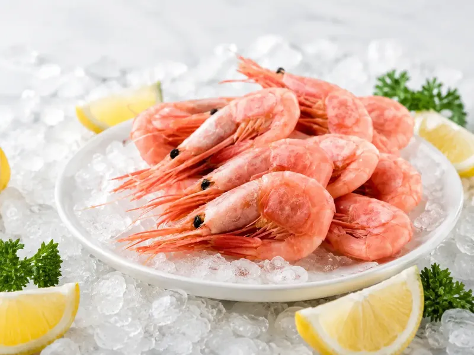

Креветки
Креветка северная “Магаданская” 50/80 варено-морож., 0.8кг
Цена и наличие
- уп.96,8 BYN / уп.В наличии
Данные на 23.11.2026.
Характеристики
- Страна
- Россия
- Вес упаковки
- 0.8 кг
- Вид разделки
- -
Описание
Креветка северная магаданская 50/80 — это дикий экологически чистый деликатес, добываемый в холодных водах Охотского моря.
ОСНОВНОЕ
Вес упаковки 0.8 кг Вид разделки – Массовая доля глазури не более 7% Пищевая ценность на 100 г продукта белки – 18 г, жиры – 2 г, углеводы – 1 г Энергетическая ценность на 100 г продукта 95 ккал Условия и срок хранения хранить при температуре -10 — -20 градусов, повторно не замораживать Страна Россия
ДОПОЛНИТЕЛЬНО
Креветка северная магаданская 50/80 — это дикий, экологически чистый деликатес из холодных вод Охотского моря, выловленный в естественной среде обитания. Особенность продукта заключается в том, что креветка варится непосредственно на судне в морской воде сразу после вылова, что позволяет максимально сохранить её натуральный вкус, аромат и питательные свойства. Размер 50/80 означает среднюю–крупную фракцию (50–80 штук на 1 кг), что делает продукт универсальным для различных блюд и подачи. Мясо магаданской креветки отличается плотной, сочной текстурой и ярко выраженным сладковатым вкусом, за который особенно ценятся северные дикие креветки. Продукт богат белком и микроэлементами, что делает его не только вкусным, но и полезным. Идеально подходит для употребления в качестве самостоятельной закуски, а также для салатов, морских ассорти и холодных блюд ресторанного уровня.